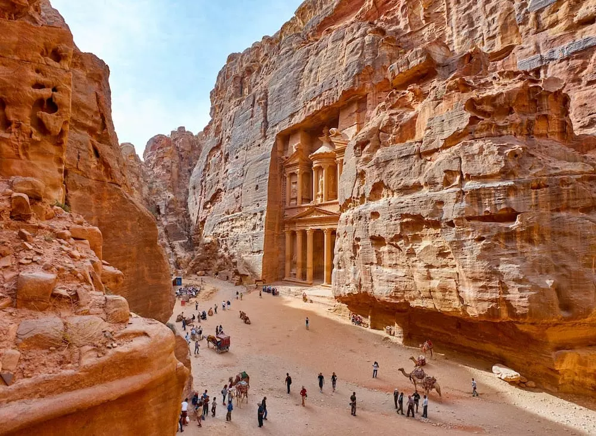

Petra (Jordan)
An archaeological city known for its rock-cut architecture and water conduit system.

Machu Picchu (Peru)
An ancient Inca city located in the Andes, renowned for its breathtaking setting.

Chichen Itza (Mexico)
A large pre-Columbian archaeological site, featuring a pyramid known as El Castillo.

Roman Colosseum (Italy)
A massive amphitheater used for gladiatorial contests and public spectacles.

Taj Mahal (India)
A white marble mausoleum built by the Mughal Emperor Shah Jahan in memory of his wife Mumtaz Mahal.
Red Fort (India))
The Red Fort, a UNESCO World Heritage Site in Delhi, India, stands as a majestic symbol of Mughal architecture and rich historical significance.
Christ the Redeemer (Brazil)
A colossal statue of Jesus Christ overlooking Rio de Janeiro.